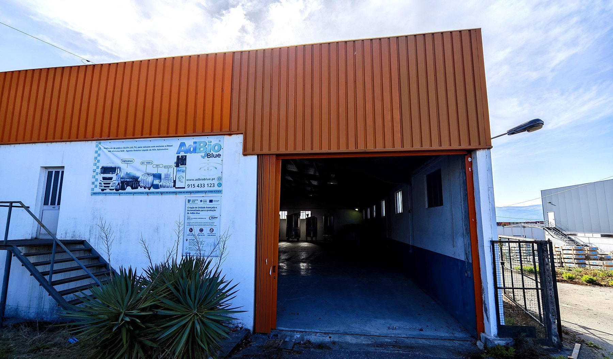

5 LJerrycan
Top‑ups for cars and light commercials. Handy, with a filling spout.

AdBio Blue is the diesel exhaust fluid for SCR‑equipped engines: it cuts nitrogen‑oxide emissions and keeps your vehicles compliant with Euro 4, 5 and 6. Produced in Portugal, at the Constantim industrial estate in Vila Real.
This project is only possible thanks to European Union support through COMPETE 2030 / Portugal 2030, and to the backing of Régia Douro Park and the City of Vila Real. Creation of an advanced, automated industrial unit for AdBio Blue production, with innovative Industry 4.0 and climate‑transition processes, aimed at reducing NOx emissions from diesel engines.
The plant is operating and expanding. The project advances in phases:


Publicity information for the grant under Portugal 2030 communication rules. Plaque displayed on the plant façade.
AdBio Blue is built around the real distribution chain for diesel exhaust fluid in Portugal: from the filling station to the fleet, from the workshop to the corner shop.
Beyond Portugal, GDM Petro supplies customers in Spain, France, Italy, Germany and Greece, and outside the EU in Algeria.
We use only first‑grade automotive urea (AUS 32 grade), sourced from several suppliers to secure continuity — Spain, Poland, Ukraine, China and Turkey — and chiefly from Petrobras in Brazil. Demineralised water is produced at our own plant.
From topping up a car to supplying an entire fleet. Every format comes off the same production line, under the same quality control.
Top‑ups for cars and light commercials. Handy, with a filling spout.

For regular users who want fewer stops at the pump.

For workshops and small to mid‑size fleets that start refuelling in‑house.

High‑volume users. Takes a pump, meter and dispensing hose.

Delivered straight into your tank — fleets, filling stations and industry. No packaging, no waste.
We supply AdBio Blue in bulk for dispensing pumps at filling stations — the most economical and convenient option for drivers, and a clear market trend.
For filling stations, hauliers, workshops and farms, GDM Petro supplies and installs AdBio Blue storage tanks with pump and meter on a free‑loan basis. No upfront investment for the customer, tied to a bulk supply contract.

Diesel engines release nitrogen oxides (NOx), a leading cause of urban smog, acid rain and respiratory disease. The SCR system (Selective Catalytic Reduction) injects AdBio Blue into the exhaust stream, where urea converts to ammonia and reacts with NOx in the catalyst. What leaves the tailpipe is nitrogen and water vapour — the same components as the air we breathe.
That reaction is what lets heavy and light vehicles meet Euro 4, 5 and 6. There is also an indirect climate benefit: with SCR handling NOx downstream, the engine can be tuned to burn more efficiently, using less fuel and emitting less CO₂ per kilometre.
GDM Petro's plant at the Constantim industrial estate was purpose‑built to produce AdBio Blue: stainless‑steel tanks, automated mixing and dosing, and urea concentration checked on every batch with a digital refractometer.
Dedicated storage and transport ensure the product reaches you with the same purity it left the line — protecting your vehicle's SCR catalyst and injector.


The demineralised water we produce for AdBio Blue is also sold as a product in its own right, and the range keeps growing.

Free of mineral salts and impurities. For batteries, radiators, cooling systems and industrial use. Supplied in bulk today; 5 L pack in preparation.

Organic, long‑life (G‑12 technology), protection from −35 °C to +145 °C, for diesel and petrol engines.
Quotes for fleets, filling stations, workshops and resellers. We reply on business days.